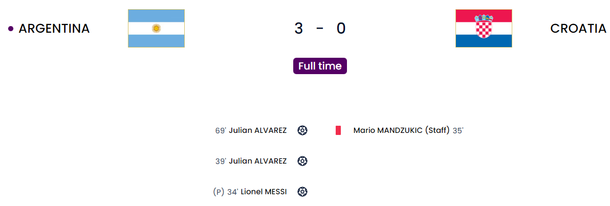
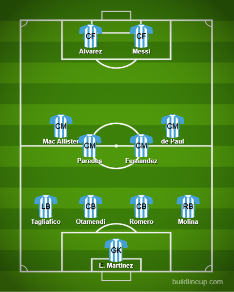
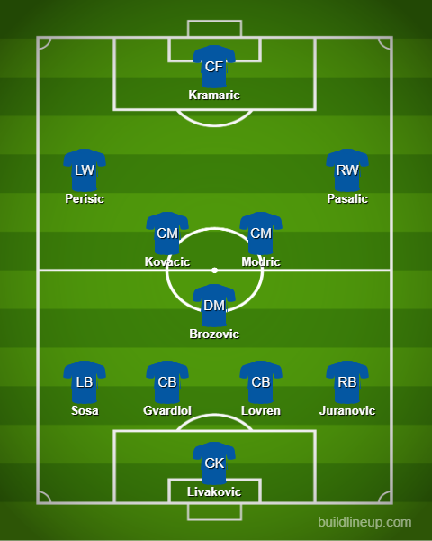

Day 24
3-day break before the semi-finals
Argentina v Croatia

Messi messes up Gvardiol. Alvarez the new frontman. Lack of attack becomes Croatia’s undoing
I was indeed pretty nervous thinking about this game due to Croatia’s ability to hold teams to a shootout but in the end, it was relatively easy. The surprising spaces being left from the start were exploited easily by the Argentina players(The manager going for a 4-man midfield to hold Croatia which was executed well). Molina and Tagliafico were the main threats compared to Mac Allister and de Paul. The spaces were evident and the first goal came from a penalty when Alvarez was found in loads of space and he managed to latch on and nudged it past Livakovic who was caught out and tackled him. There were significant protests. From my point of view, Alvarez did run into him but the keeper was unlucky in the end because he didn’t get the ball. Hence the stonewall penalty which Messi put away with ease and with that he has drawn level with his PSG teammate Mbappe. He is on a mission. To make sure his last World Cup will be a memorable one and that it will end with the trophy in his arms(Hopefully 🤞). In all the heated conversations between the Croatia players and the referee, Mandzukic was sent off 😅. I swear I forgot that Mandzukic was part of the coaching staff. Croatia is missing a player of your caliber mate and it was even more obvious in this match. Kramaric loved dropping deep too much, Petkovic was hardly able to twist and turn because of the lack of space and also the fact that this isn’t extra time 😉. The second goal was all Julian Alvarez. He has become the main frontman for them after Lautaro’s quite frankly horror show in this tournament and he’s delivering big time. This was a result of a corner gone wrong and Messi managed to carry it far before sending Alvarez through who went all the way from just behind the center circle all the way and scored. He managed to get a few 1-2s from the Croatian defenders before poking it past Livakovic. Croatia just didn’t have the attacking quality to fight back. Even though they pushed well in possession with their midfield, they just had no one to play to in the box because Kramaric was busy playing CAM like a certain Harry Kane 😑. Petkovic came on and hardly had any room because the coach decided to shore up on defense with Lisandro Martinez coming in. Perisic was so lonely he was pushed to LB because it was getting worse. The 3rd goal was from Alvarez again but all eyes were on that Messi assist because it was just vintage Messi. He absolutely OWNED one of the defenders of the tournament with that dribble. It was unbelievable. He is towards the right side. Closed down by Gvardiol. He just uses a burst of pace and uses all of his experience and dribbling to completely OWN him before supplying the ball for Alvarez who didn’t miss.

This was a spectacle I was so happy to watch happen live 😄.
Argentina

Croatia
